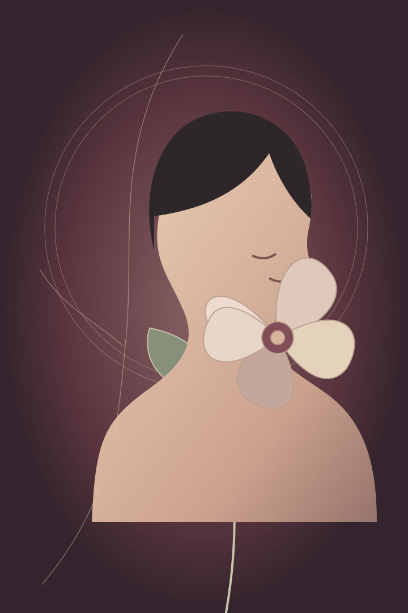
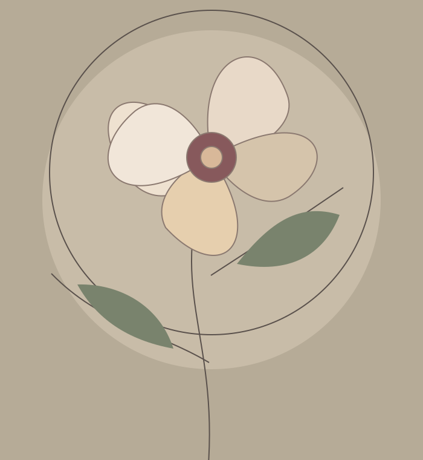
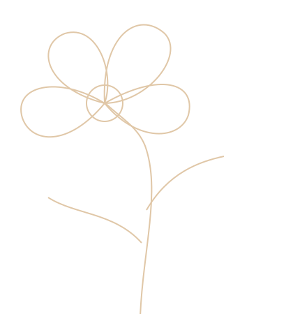

✳ ESTUDIO DE RETRATO · ARTE EN COLABORACIÓN
Nostre
Jardí.
Un jardín de mujeres únicas.
Una obra para cada historia.

N·J / EST. 2026La bellezaflorece distinta.
✳ 01 / LA IDEA
Queremos crear
una obra que
solo existirá
contigo.
Tu belleza. Tu identidad. Nuestra interpretación.

✳ 02 / DOS MIRADAS
La imagen
y la huella.
01 — ROSELA MIRANDA
Maquillaje.
Vestuario.
Joyería.
02 — AXEL CRUZ
Dibujo.
Pintura.
Anatomía.
✳ 03 / EL PROCESO
Cada flor,
irrepetible.
01↗
Conocerte.
Una conversación. Tus ideas, tu esencia, tu forma de mirar.
02✳
Interpretarte.
Una imagen diseñada para ti: joyas, maquillaje y vestuario.
03↗
Retratarte.
Tu presencia se convierte en una obra dibujada o pintada.
✳ 04 / EL JARDÍN
Una flor.
Una historia.
Para siempre.

LA COLECCIÓN COMIENZA AQUÍ.
✳ 05 / PARTICIPAR
¿Florecemos
juntos?
Cada mujer tiene una historia.
Nos encantaría conocer la tuya.